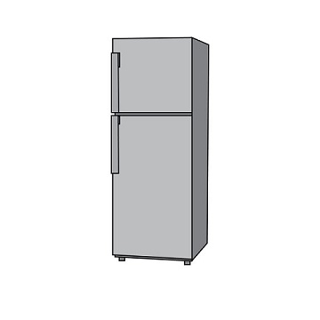

O que são as máquinas térmicas?
As máquinas térmicas são as que funcionam em ciclos, com duas fontes: uma fonte quente e uma fria.
A máquina retira calor da fonte quente para realizar o trabalho, porém, como mencionado anteriormente, nem todo o calor é aproveitado,
e essa taxa de calor não aproveitado vai para a fonte fria.
Que máquinas térmicas estão presentes no dia a dia?
Alguns exemplos são:
Geladeira*
Ar-condicionado*
Motores a combustão
Chuveiro elétrico
Gerador elétrico
*Estes em específico são máquinas térmicas reversas
